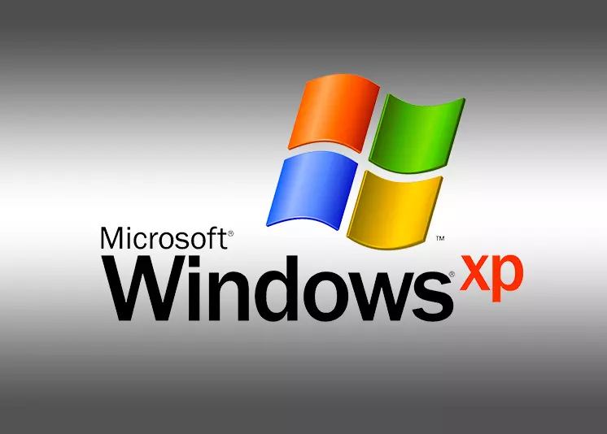
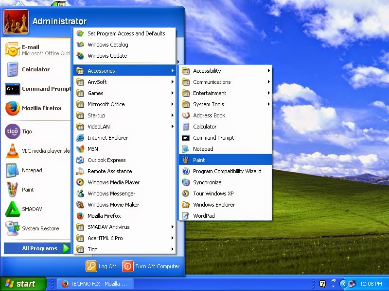

Windows XP

Wersja: Windows XP Professional SP3
Data wydania: 25 Października 2001
Architektura: 32-bit (x86)
Windows XP to legenda świata systemów operacyjnych. Prosty, szybki, stabilny – zdobył serca użytkowników na całym świecie. Charakterystyczny dźwięk startu i tapeta "Bliss" przeszły do historii. Idealny do retro-projektów, emulatorów i... wspominek. 🌄

Data wydania: 25 Października 2001
Architektura: 32-bit (x86)
Windows XP to legenda świata systemów operacyjnych. Prosty, szybki, stabilny – zdobył serca użytkowników na całym świecie. Charakterystyczny dźwięk startu i tapeta "Bliss" przeszły do historii. Idealny do retro-projektów, emulatorów i... wspominek. 🌄
🔧 Wymagania sprzętowe
- Procesor: 233 MHz (zalecane 300 MHz lub więcej)
- Pamięć RAM: minimum 64 MB (zalecane 128 MB+)
- Dysk twardy: 1.5 GB wolnego miejsca
- Karta graficzna: SVGA (800x600)
- Napęd CD-ROM lub port USB
💽 Instrukcja instalacji
- Pobierz obraz ISO klikając poniżej.
- Utwórz bootowalny nośnik (CD/USB) np. za pomocą Rufusa.
- Ustaw bootowanie z USB/CD w BIOS-ie.
- Uruchom komputer ponownie i rozpocznij instalację.
- Postępuj zgodnie z krokami instalatora systemu Windows XP.